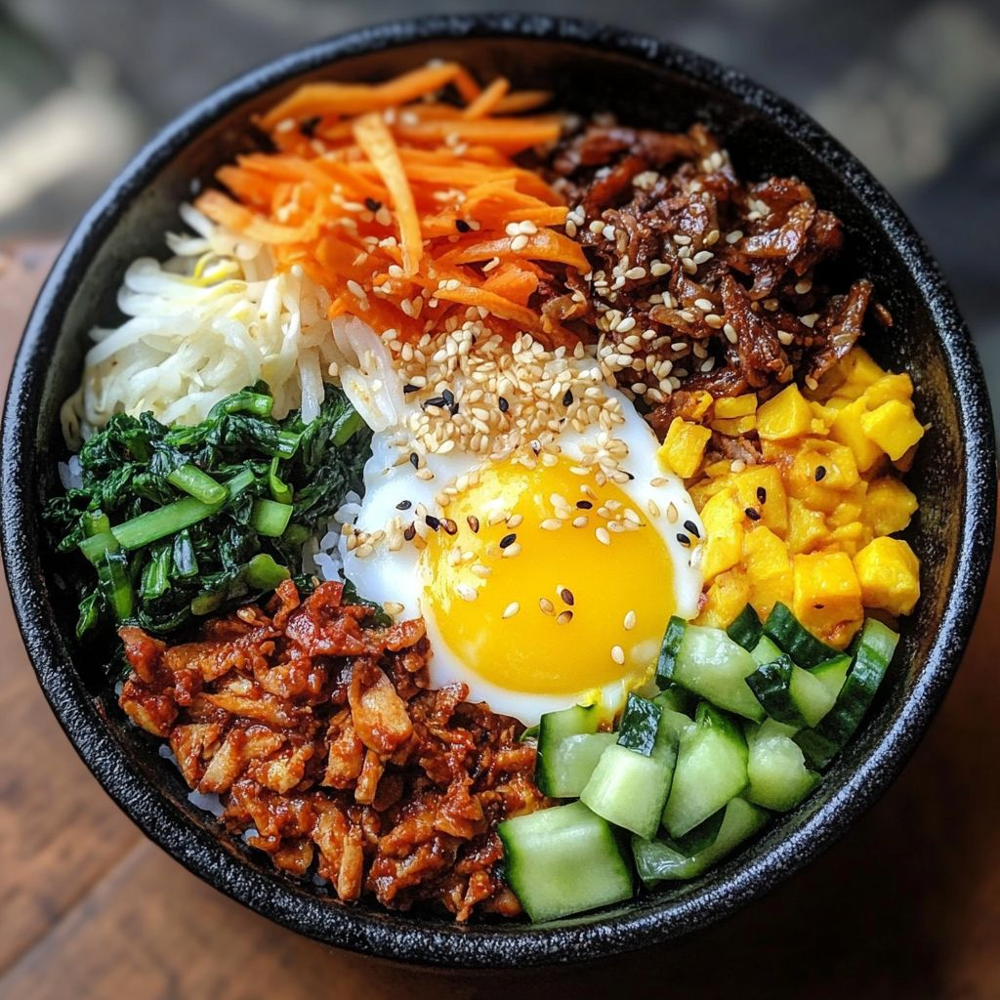
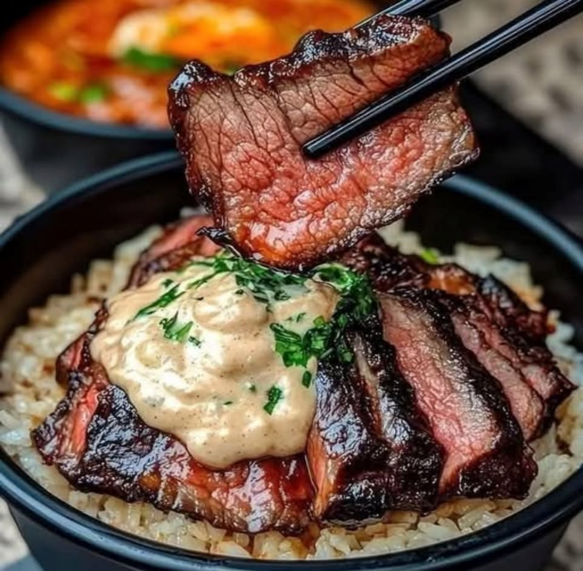
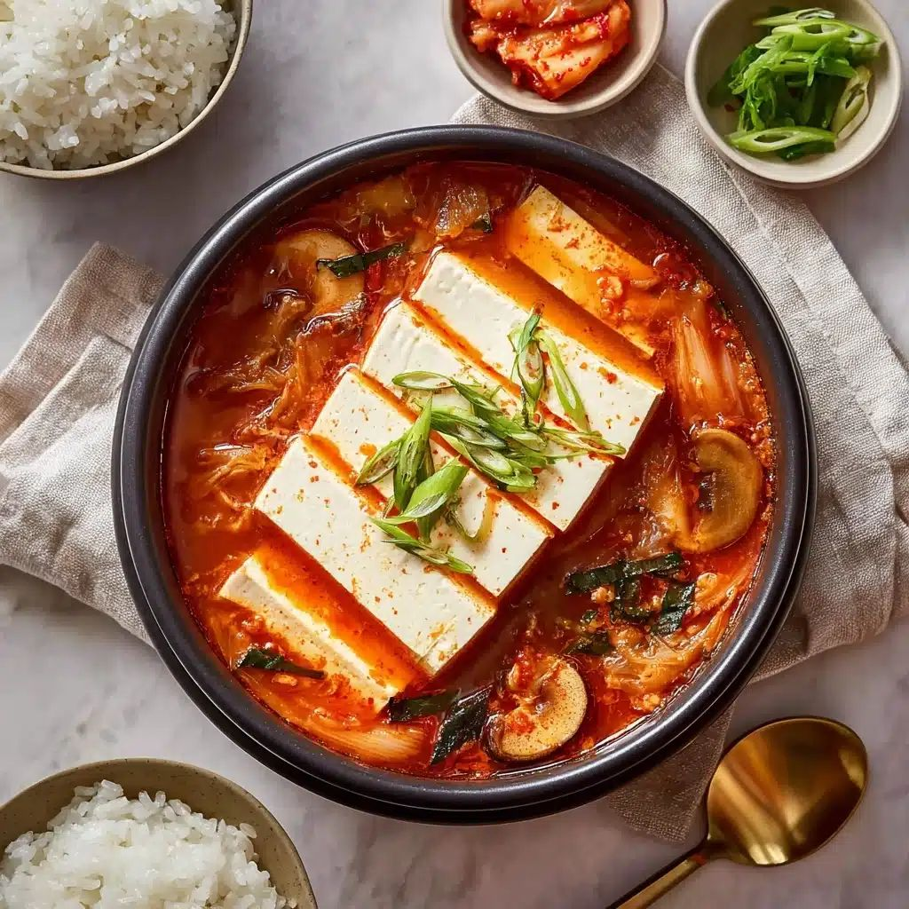
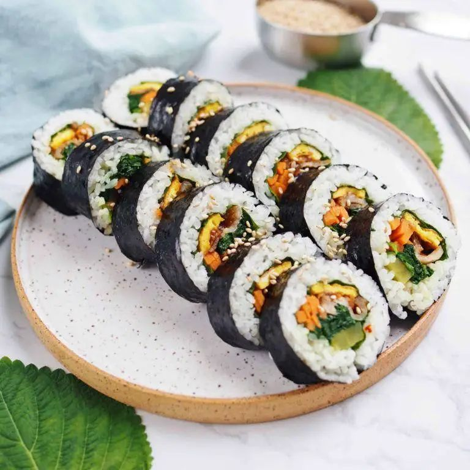
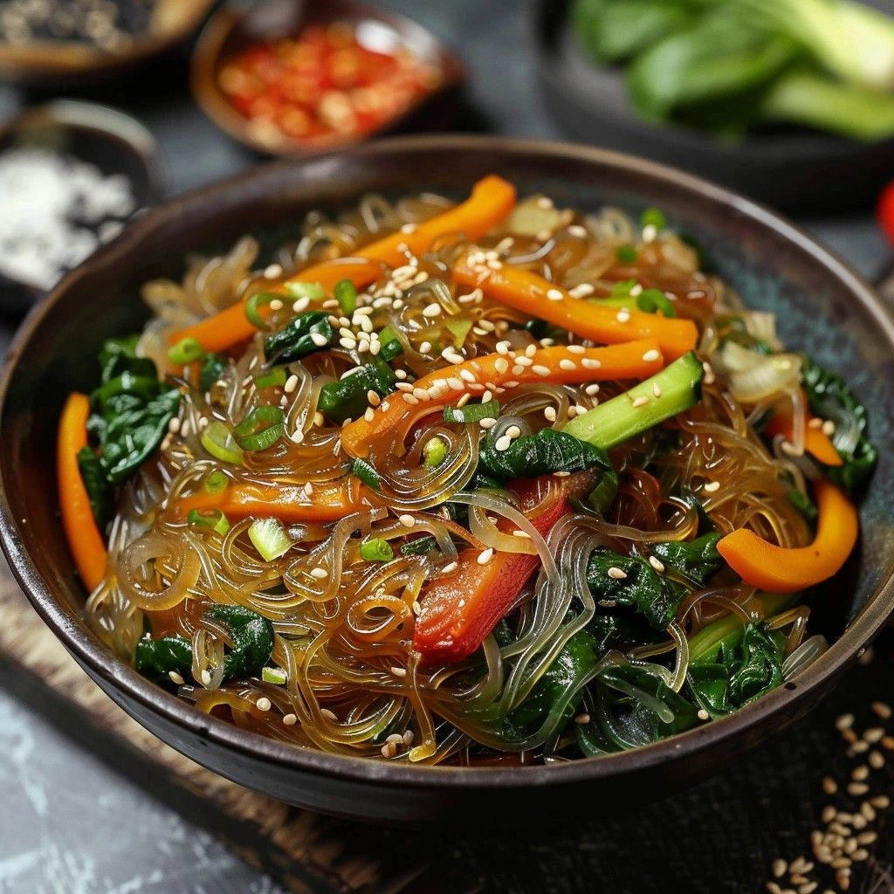
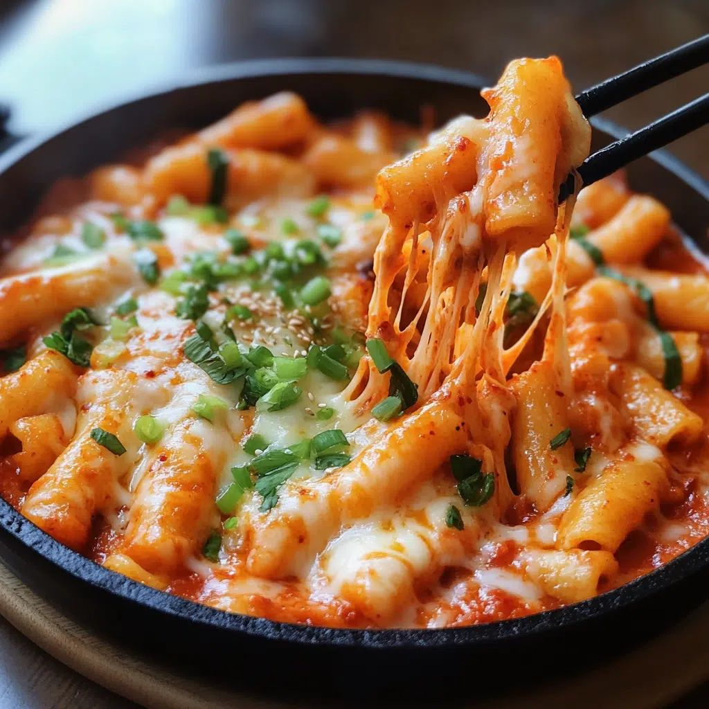
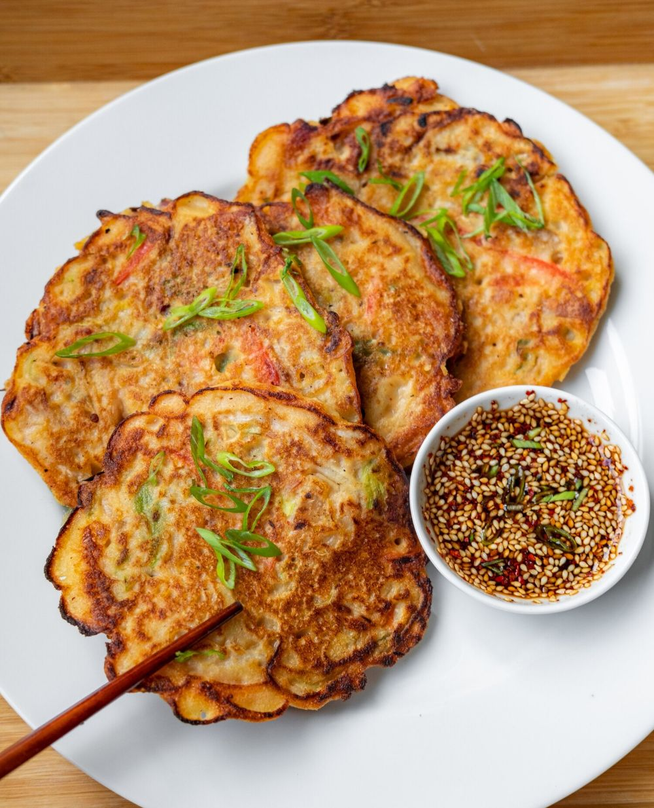
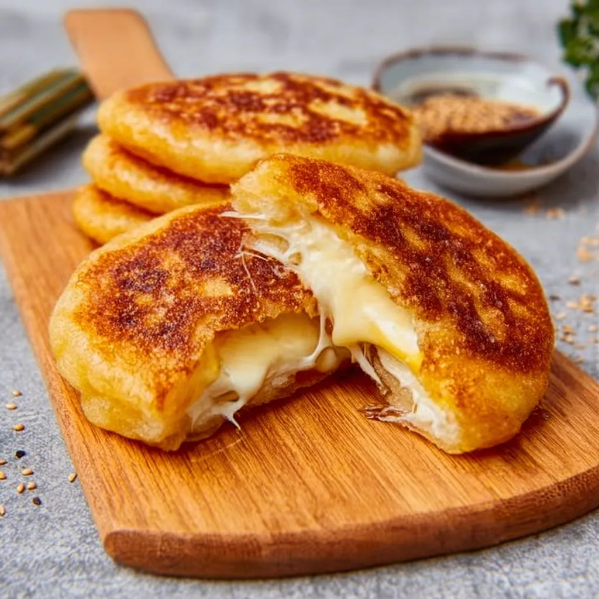

1. Bibimbap

Uma das comidas coreanas mais essenciais, o bibimbap é uma tigela mista colorida de arroz branco e vegetais variados, coberta com um ovo frito e gochujang (molho picante de pimenta vermelha). Para dar mais sabor, você também pode adicionar proteínas como carne marinada ou tofu, criando um prato completo que é saudável e delicioso.
2. Churrasco coreano

Um prato imperdível para os amantes de carne, o churrasco coreano é uma experiência gastronômica divertida e interativa em Seul, onde você pode cozinhar sua escolha de carnes marinadas - como bulgogi (carne bovina), samgyeopsal (barriga de porco) e galbi (costela curta) - em uma grelha a carvão em sua mesa. Combine suas carnes com acompanhamentos como kimchi e rabanete em conserva, depois embrulhe-as em folhas de alface frescas e mergulhe-as no molho ssamjang para uma experiência autêntica.
3. Kimchi

Considerado a base da alimentação dos coreanos, ele pode integrar todas as refeições principais do dia. O kimchi é uma conserva de hortaliças com um molho vermelho bem apimentado. A receita oriental é feita a partir de acelga, nabo e pimenta que, após horas em salmoura, são envolvidos em uma pasta feita com farinha de arroz, açúcar e vários temperos. Porém, há muitas variantes dele, inclusive, o Museu do Kimchi afirma que há 187 maneiras diferentes de preparar. Como o prato é tão importante para a Coreia, há um museu só para ele, em Seul.
4. Gimbap

O Gimbap é a versão coreana dos rolos de sushi, com arroz cozido no vapor e vários legumes e carnes, todos cuidadosamente enrolados em folhas de algas marinhas secas chamadas gim. Os recheios mais comuns incluem cenoura, pepino, rabanete em conserva, espinafre, ovo, caranguejo e carne bovina. A principal diferença em relação ao sushi japonês é que o arroz do gimbap é temperado com óleo de gergelim em vez de vinagre.
5. Japchae

Japchae é o macarrão parecido com Yakisoba que você vê nos Doramas. Aparentemente é bem similar, por ser um macarrão refogado com vegetais, carnes, cogumelos e até frutos do mar. Mas a diferença é o macarrão, que é transparente, mais elástico e feito de batata doce e, o tempero adocicado que vai açúcar e às vezes, mel. Ele é servido quente ou frio.
6. Tteobokki

O Tteokbokki é uma comida popular de rua em Seul que consiste em bolos de arroz macios e mastigáveis cozidos em molho gochujang vermelho. Não muito apimentadas, mas com um bom toque de sabor, elas geralmente são comidas como um lanche rápido para viagem e são uma das comidas mais essenciais para você experimentar em Seul.
7. Jjin-mandu

Outra comida coreana muito apreciada, o jjin-mandu - ou simplesmente mandu - são pequenos bolinhos cozidos no vapor recheados com vários recheios, como carne de porco, tofu e vegetais. Encontrados em restaurantes e mercados de comida de rua, esses deliciosos bolinhos geralmente são servidos com molho à base de soja.
8. Kimchi jjigae

Um item básico da culinária caseira coreana, o kimchi jjigae é um ensopado reconfortante feito com kimchi fermentado, tofu, carne de porco e cebolinha em um caldo picante à base de anchova. O ensopado farto geralmente é servido em uma panela grande no centro de uma mesa comunitária e comido com uma tigela de arroz pegajoso quente.
9. Bindaetteok

Bindaetteok, ou panquecas de feijão mungo, é uma comida popular de rua coreana adorada pelos habitantes locais. Feitas de feijão-mungo moído e misturadas com legumes, kimchi ou carne, as panquecas douradas são crocantes por fora e macias por dentro.
10.Hotteok

Um favorito local durante o inverno frio de Seul, o hotteok é uma panqueca doce recheada com açúcar mascavo, nozes e canela. Servido bem quente por vendedores de comida de rua em toda a cidade, nada supera a bondade pegajosa e melosa de um hotteok recém-cozido em um dia frio e congelante.
Receitas
1-BIBIMBAP
Ingredientes (4 porções):
- 2 xícaras de arroz branco cozido
- 200g de carne bovina em tiras (opcional)
- 1 cenoura em tiras
- 1 abobrinha em tiras
- 1 xícara de espinafre
- 100g de broto de feijão
- 4 ovos
- Óleo de gergelim
- Sal e pimenta
- 2 colheres (sopa) de gochujang (pasta de pimenta coreana)
- Gergelim torrado
Modo de preparo:
- Refogue separadamente os legumes com sal e um fio de óleo de gergelim.
- Tempere e refogue a carne.
- Frite os ovos (gema mole).
- Monte numa tigela: arroz na base, legumes e carne por cima.
- Coloque o ovo, gochujang e misture antes de comer.
2-CHURRASCO COREANO
Ingredientes:
- 500g de carne fatiada fina
- 3 colheres (sopa) de molho de soja
- 1 colher (sopa) de açúcar
- 1 colher (sopa) de óleo de gergelim
- 2 dentes de alho picados
- 1 colher (chá) de gengibre ralado
- ½ cebola fatiada
- 1 cebolinha picada
Modo de preparo:
- Misture todos os ingredientes e marine a carne por 30 minutos.
- Grelhe rapidamente em frigideira bem quente.
- Sirva com folhas de alface para montar wraps.
3-KIMCHI
Ingredientes:
- 4 folhas de alga nori
- 2 xícaras de arroz japonês cozido
- 1 cenoura em tiras e pepino em tiras
- Omelete em tiras e presunto ou kani
- Óleo de gergelim
Modo de Preparo:
- Tempere o arroz com óleo de gergelim e sal.
- Espalhe na alga.
- Coloque recheios.
- Enrole apertando bem.
- Corte em rodelas.
4-GIMBAP
Ingredientes:
- 200g de macarrão de batata-doce (dangmyeon)
- 150g de carne em tiras
- Cenoura, espinafre, cebola fatiados
- 3 colheres (sopa) de molho de soja
- 1 colher (sopa) de açúcar e 1 de óleo de gergelim
Modo de Preparo:
- Cozinhe o macarrão.
- Refogue carne e legumes.
- Misture tudo com temperos.
- Finalize com gergelim.
5-JAPCHAE
Ingredientes:
- 200g de macarrão de batata-doce (dangmyeon)
- 150g de carne em tiras
- Cenoura, espinafre, cebola fatiados
- 3 colheres (sopa) de molho de soja
- 1 colher (sopa) de açúcar
- 1 colher (sopa) de óleo de gergelim
Modo de preparo:
- Cozinhe o macarrão.
- Refogue carne e legumes.
- Misture os temperos formando uma pasta.
- Misture tudo com temperos.
- Finalize com gergelim.
6-TTEOBOKKI
Ingredientes:
- 500g de tteok (bolinhos de arroz)
- 2 colheres (sopa) de gochujang
- 1 colher (sopa) de açúcar
- 1 colher (chá) de gochugaru
- 2 xícaras de caldo (anchova ou legumes)
- Cebolinha
- Ferva o caldo.
- Adicione os tteok e cozinhe até ficarem macios.
- Acrescente temperos.
- Cozinhe até o molho engrossar.
Modo de preparo:
Modo de preparo:
- Corte a acelga e salgue por 2 horas.
- Lave e escorra.
- Misture os temperos formando uma pasta.
- Passe na acelga e adicione legumes.
- Deixe fermentar em pote fechado por 1-3 dias.
7-JJIN-MANDU
Ingredientes:
- Massa para dumpling pronta
- 300g de carne moída
- 1 xícara de repolho picado
- 2 colheres (sopa) de molho de soja
- Alho e gengibre
Modo de preparo:
- Misture o recheio.
- Recheie as massas e feche.
- Cozinhe no vapor por 15 minutos.
8-KIMCHI JJIGAE
Ingredientes:
- 1 xícara de kimchi
- 200g de carne suína
- 1 colher (sopa) de gochujang
- 1 colher (chá) de gochugaru
- 1 bloco de tofu
- 2 xícaras de água ou caldo
Modo de preparo:
- Refogue a carne.
- Adicione kimchi e temperos.
- Acrescente água.
- Ferva por 20 minutos.
- Adicione tofu no final.
9-BINDATTEOK
Ingredientes:
- 1 xícara de feijão mungo demolhado
- ½ xícara de kimchi picado
- 1 cebolinha
- Sal
Modo de preparo:
- Bata o feijão até virar pasta.
- Misture os ingredientes.
- Frite em formato de panqueca até dourar.
10-HOTTEOOK
Ingredientes:
- 2 xícaras de farinha
- 1 colher (sopa) de açúcar
- 1 colher (chá) de fermento biológico
- ¾ xícara de água morna
- Recheio: açúcar mascavo, canela e nozes
Modo de preparo:
- Misture os ingredientes da massa e deixe crescer 1 hora.
- Recheie com açúcar e canela.
- Frite e pressione levemente até dourar.